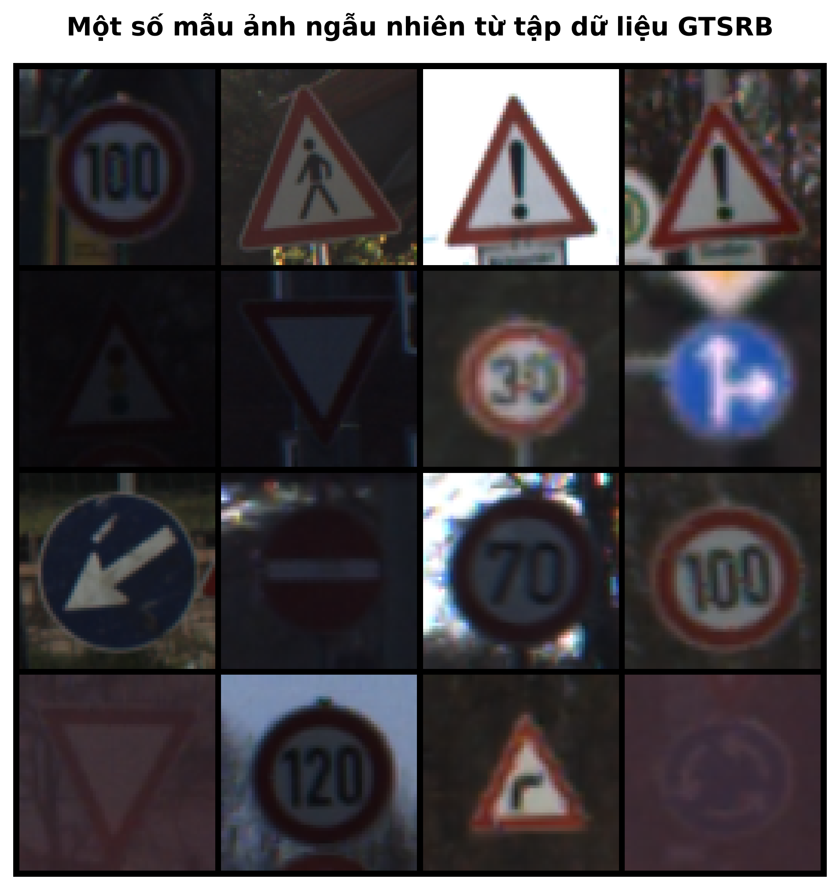
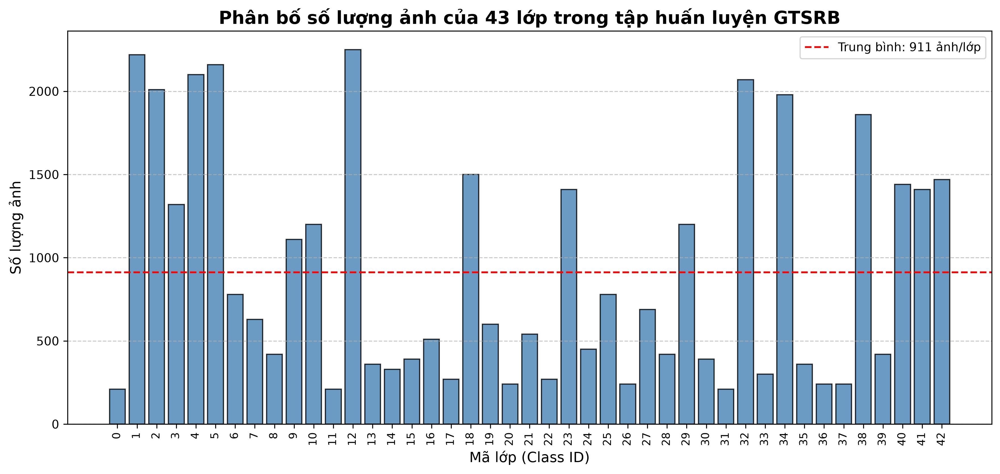

Dự án này so sánh hai họ kiến trúc chính trong thị giác máy tính: Mạng nơ-ron Tích chập (CNN) và Vision Transformer (ViT). Các mô hình được đánh giá trên một tập dữ liệu lớn với nhiều chiến lược huấn luyện khác nhau như huấn luyện từ đầu (from-scratch), fine-tune toàn bộ và đóng băng (freeze) một phần backbone.
Tập dữ liệu: GTSRB (German Traffic Sign Recognition Benchmark) Dataset (~51.800 ảnh, 43 lớp)
Lý do chọn: Phù hợp với chủ đề giao thông/xe tự lái (Automotive). Tập dữ liệu giải quyết bài toán phân loại đa lớp (43 lớp) với số lượng mẫu lớn (hơn 51.000 ảnh) và đa dạng về kích thước. Tính chất ảnh thực tế bị mờ, ngược sáng hoặc che khuất rất thích hợp để so sánh khả năng trích xuất đặc trưng của CNN và ViT trong điều kiện thực tế.

Phân tích & Tiền xử lý (EDA): Dữ liệu có sự mất cân bằng giữa các lớp (có lớp > 2000 ảnh, có lớp chỉ ~200 ảnh). Do đó, dữ liệu được augmentation (Resize về 64x64, Random Rotation, ColorJitter) để mô phỏng điều kiện môi trường đa dạng và tránh overfitting.

(Sẽ được cập nhật ở mốc A1.2) Đánh giá và phân tích độ chính xác (Accuracy), thời gian huấn luyện, số lượng tham số trainable, và các trường hợp dự đoán sai thông qua Ma trận nhầm lẫn (Confusion Matrix).